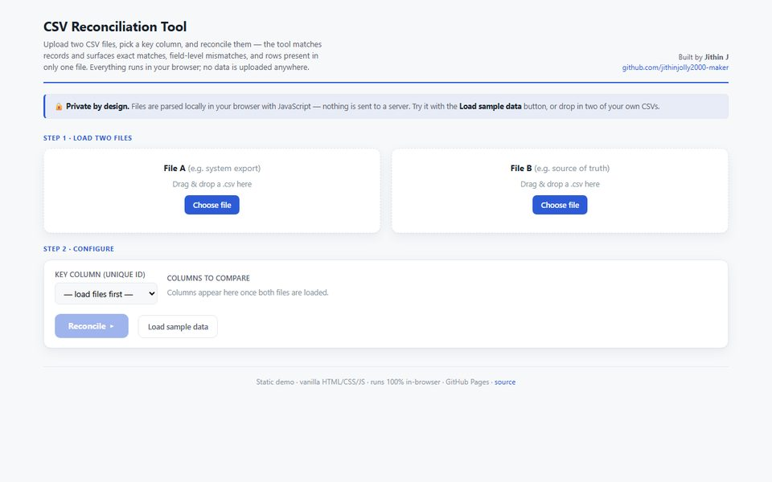

Case study · Data quality
Reconcile
The afternoon of VLOOKUPs, done in a few seconds, without your data leaving your computer.

The problem
Comparing two exports by hand means lookups, filters and highlighting, and it's easy to miss a row. Online comparison tools are faster, but they ask you to upload files that are often confidential.
The approach
Everything happens in the browser. The tool reads both files, matches rows on the key column you choose, and sorts every row into one of four groups.
Key decisions
- Private by design. Files are parsed locally and never sent to a server, so it's safe to use with financial or customer data.
- Mismatches at field level. It points to the exact column that differs, not just "this row is different", which is what makes it quick to act on.
- Try it before trusting it. A sample-data button shows how it works in one click, before anyone loads their own files.
- No dependencies. Plain HTML, CSS and JavaScript, so it loads fast and works offline once opened.
What it shows
Which records agree, which differ and in exactly which field, and which exist in only one file, with any view exportable as CSV.
What I'd add next
Excel files, tolerances for amounts and dates, matching on amount and date when there's no shared reference, and catching near-miss references such as a letter O typed for a zero. I've since prototyped a fuller version with these features.
A portfolio project. The sample data is synthetic.